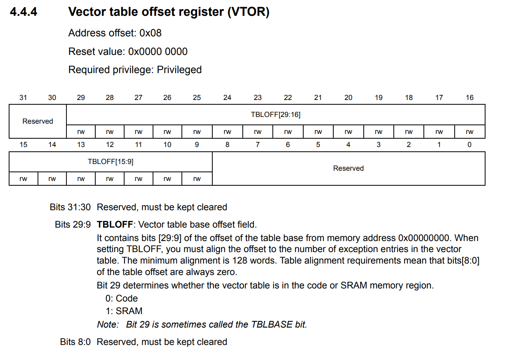

Autor: Wojciech Olech
Bootloader to program który znajduje się w specjalnie wydzielonej sekcji pamięci, najczęściej na jej początku. Dzięki bootloaderowi możliwa jest aktualizacja programu na mikrokontrolerze za pomocą dowolnych interfejsów (na przykład UART, I2C, SPI, SD, Ethernet), bez potrzeby używania dedykowanych interfejsów do programowania (SWD, JTAG). Dodatkowo, bootloader może weryfikować poprawność programu przed jego aktualizacją (lub po), zarządzać szyfrowaniem pamięci lub blokowaniem jej.
Potrzebujemy dwóch projektów - jeden dla bootloadera, drugi dla głównej aplikacji.
Projekt bootloadera powinien być jak najbardziej minimalistyczny pod względem wielkości kodu, żeby móc wydzielić jak najmniejszą część pamięci FLASH dla niego.
W projekcie bootloadera należy włączyć tylko wyłącznie wymagane do działania bootloadera peryferia i należy upewnić się, że wszystkie peryferia które były aktywowane przez bootloader są deinicjalizowane przed wskoczeniem w główny program. Peryferia które są inicjowane przez Cube'a jednorazowo i nie są używane w kodzie można przełączyć na LL w Project Manager -> Advanced Settings, w celu zmniejszenia zajętości pamięci FLASH (ponieważ osobiście preferuję HALa, ale jeśli wolisz pracować na LL to możesz i przełączyć w ten sposób wszystkie peryferia).
Wszystko co opisuję w tym artykule wykonywane jest na płytce Nucleo-F401RE. Jeśli chcesz stworzyć bootloader dla mikrokontrolera innej serii, to z racji pewnych różnic w budowie i rdzeniach, należy zwracać uwagę na pewne szczegóły które mogą być dla danego mikrokontrolera specyficzne i inne od przedstawionych tutaj - na przykład inne rozłożenie pamięci, inne tryby bootowania, inny rozkład pamięci FLASH lub inne szerokości szyn danych. Część informacji będzie uniwersalna, ale tam gdzie mogą pojawić się różnice odsyłam do konsultacji z datasheetem, reference manualem oraz programming manualem danego mikrokontrolera.
Bootloader wykorzysta następujące peryferia:
Przykładowa aplikacja będzie wykorzystywać te same peryferia, w podobnej konfiguracji, z wyjątkiem CRC które nie będzie w niej potrzebne. Baud rate również zmienimy na 921600, dla wygody
W przykładowej aplikacji będziemy wyświetlać wiadomości poprzez UART oraz obsługiwać przycisk w celu zmiany stanu diody LED.
Bootloader i program główny będą jednocześnie istnieć na głównym FLASHu procesora. Bootloader umieścimy na początku pamięci, dzięki czemu będzie startować przed programem głównym, wykonywać aktualizację jeśli jest dostępna i uruchamiać go. Żeby móc wykonać taki manewr, należy odpowiednio skonfigurować skrypty linkera obu programów, co pozwoli na ich poprawny linkaż, flashing oraz debugging.
Skrypty linkera znajdują się w głównym katalogu projektu - jeden dla pamięci FLASH, drugi dla RAM, w naszym przypadku zmodyfikujemy ten odpowiedzialny za FLASH o nazwie STM32F401RETX_FLASH.ld. Zaczniemy od skryptu linkera dla bootloadera. Otwieramy go i szukamy następującej sekcji:
/* Memories definition */
MEMORY
{
RAM (xrw) : ORIGIN = 0x20000000, LENGTH = 96K
FLASH (rx) : ORIGIN = 0x8000000, LENGTH = 512K
}
"Czysty" bootloader po wygenerowaniu i skompilowaniu zajmuje około 10KB pamięci FLASH, na 512KB dostępne. Zmniejszymy więc wielkość programu w skrypcie linkera, żeby widzieć czy przypadkiem jej nie przekroczyliśmy. Przy określaniu wielkości i przesunięć FLASHa, należy mieć na uwadze szerokość szyny danych, alignment tablicy wektorów przerwań (o czym szczegółowo piszę niżej) i podział pamięci flash na sektory. W przypadku mikrokontrolera STM32F401RE, szyna FLASH jest wielkości 128 bitów, czyli 16 bajtów, a alignment tablicy wektorów przerwań wynosi 0x200 (512 bajtów). Szerokość szyny danych równa 128 bitom, co oznacza, że podczas jednej operacji odczytu zostanie odczytane 16 bajtów, co jest traktowane jako jeden "wiersz" pamięci. Z tego powodu, przesunięcia i wielkości programów muszą być podzielne przez 16 w naszym przypadku. Znaczenie alignmentu przesunięcia tablicy przerwań jest trochę bardziej złożone i opisuję je niżej.
Dodatkowo, pamięć FLASH w mikrokontrolerach STM32 jest podzielona na strony - konkretny podział można sprawdzić w reference manualu mikrokontrolera. W przypadku STM32F401RE, wygląda on następująco:
Jest to dla nas ważne ze względu na to, w jaki sposób przebiega programowanie pamięci FLASH. W przypadku tego rodzaju pamięci, programowanie odbywa się poprzez zmianę wartości komórek pamięci z logicznej 1 na logiczne 0. Jedynym sposobem na zmianę wartości komórki z 0 na 1 jest przeprowadzenie operacji kasowania, którą można zrobić albo na sektorze pamięci (sector erase), albo na całej pamięci (mass erase). Mass erase nas nie interesuje, bo wiąże się on z usunięciem bootloadera, więc będziemy musieli przeprowadzić czyszczenie tylko tych sektorów pamięci, w których znajduje się aplikacja - musimy więc zadbać o to, żeby zarezerwować pełne sektory dla bootloadera.
Dajmy bootloaderowi na ten moment 32KB pamięci - dwa pełne pierwsze sektory. W tym celu, należy ustawić wartość LENGTH dla sekcji FLASH na 32. RAM może być współdzielony bez żadnego problemu, więc jego nie modyfikujemy. Nie modyfikujemy tutaj adresu ORIGIN, ponieważ chcemy żeby bootloader uruchamiał się bezpośrednio po zasileniu mikrokontrolera - domyślny adres 0x0800 0000 to adres początkowy FLASHa. Definicja pamięci dla bootloadera powinna wyglądać po tym zabiegu następująco:
/* Memories definition */
MEMORY
{
RAM (xrw) : ORIGIN = 0x20000000, LENGTH = 96K
FLASH (rx) : ORIGIN = 0x8000000, LENGTH = 32K
}
Efekt można zobaczyć po zbudowaniu bootloadera w oknie Build Analysis:
Jeśli wielkość FLASHa w tym oknie się nie zmieniła, upewnij się że zmodyfikowałeś poprawny plik!
Następnie, musimy przerobić skrypt linkera naszego głównego programu w celu przesunięcia go o 32KB pamięci, dzięki czemu nie będzie nadpisywać bootloadera przy ręcznym flashowaniu i będzie poprawnie ułożony. W tym celu, należy zmienić zarówno ORIGIN jak i LENGTH sekcji FLASH w skrypcie linkera. Do ORIGIN równego 0x8000000 dodajemy 32*1024 = 32768 = 0x8000, co daje nam 0x8008000. LENGTH zmiejszamy o 32K, co daje nam 512K - 32K = 480K.
Definicja pamięci dla aplikacji powinna po tym zabiegu wyglądać następująco:
/* Memories definition */
MEMORY
{
RAM (xrw) : ORIGIN = 0x20000000, LENGTH = 96K
FLASH (rx) : ORIGIN = 0x8008000, LENGTH = 480K
}
Efekt powinien być widoczny po zbudowaniu aplikacji, w oknie Build Analysis
Zanim przejdziemy do stworzenia bootloadera, stwórzmy przykładową docelową aplikację, dzięki której będziemy mogli zweryfikować czy skok z bootloadera do programu wykonuje się poprawnie. Ruszymy też tutaj kilka ważnych kwestii i problemów związanych z umieszczaniem programu w niestandardowej lokalizacji pamięci.
Do przykładowej aplikacji dodajmy trochę kodu - przeładujemy _write, żeby dało się korzystać z funkcji printf poprzez USART oraz zrobimy obsługę przycisku i diody LED. Poniższy kod należy wkleić w odpowiednie sekcje w pliku main.c:
Nagłówek stdio.h trzeba dodać do sekcji Includes:
/* USER CODE BEGIN Includes */ #include <stdio.h> /* USER CODE END Includes *
Zmienna-counter którą będziemy zliczać ile razy został wciśnięty przycisk, dodać do sekcji PV (Private Variables):
/* USER CODE BEGIN PV */ unsigned buttonCounter = 0; /* USER CODE END PV *
printf na "dzień dobry" w celu sprawdzenia czy nasz program się uruchomił, do funkcji main pod inicjalizacją:
/* USER CODE BEGIN 2 */ printf("Hello, world!\r\n"); /* USER CODE END 2 */
Przeładowanie funkcji _write z syscall.c w celu printowania danych poprzez USART, oraz obsługa przerwania przycisku. Należy upewnić się, że zostało włączone odpowiednie przerwanie w ustawieniach NVIC w CubeMX! (w tym przypadku - EXTI line[15:10] interrupts).
/* USER CODE BEGIN 4 */ int _write(int file, char* ptr, int len) { HAL_UART_Transmit(&huart2, (uint8_t*) ptr, len, HAL_MAX_DELAY); return len; } void HAL_GPIO_EXTI_Callback(uint16_t pin) { if (pin == B1_Pin) { HAL_GPIO_TogglePin(LD2_GPIO_Port, LD2_Pin); buttonCounter++; printf("Button has been pressed %d time(s) already!\r\n", buttonCounter); } } /* USER CODE END 4 */
Po skompilowaniu programu można spróbować go przetestować. W tym celu, używamy funkcji Debug. Funkcja Run nie zadziała poprawnie, ze względu na przesunięcie naszego programu. Przy próbie użycia funkcji Run, STM32CubeProgrammer poprawnie uploaduje program pod adres 0x0800 8000, ale procesor automatycznie wystartuje z adresu 0x0800 0000 - czyli domyślnego, pod którym znajduje się poprzedni program (lub jego część). To samo stanie się po resecie mikrokontrolera. Funkcja Debug automatycznie skoczy do adresu startowego naszego programu, więc będzie można sprawdzić jego działanie.
Jeśli wszystko jest okej, po podłączeniu się dowolnym serial monitorem, uruchomieniu debugu i programu powinniśmy otrzymać na serial monitorze naszą powitalną wiadomość:
Jeśli ta wiadomość się nie wyświetla i jesteś absolutnie pewny/a że wszystko jest skonfigurowane poprawnie oraz kod jest prawidłowy, to jest możliwe że zbugował ci się wbudowany printf. Miewam takie problemy od czasu do czasu i nie wiem skąd się biorą, natomiast jednym z rozwiązań jest użycie alternatywnej implementacji printfa - na przykład tej, której używam od dłuższego czasu i którą mogę rekomendować: https://github.com/mpaland/printf. W sekcji "Usage" opisane jest dodawanie tej biblioteki do projektu. Alternatywnie, zamień tego printfa na zwykły HAL_UART_Transmit
Ale, nawet jeśli poprawnie skonfigurowaliśmy przycisk i NVIC, to po jego kliknięciu nie zobaczymy nic w terminalu ani nie zaświeci się dioda na płytce. Jeśli po kliknięciu przycisku zatrzymamy program, to zobaczymy że jesteśmy gdzieś gdzie debuger nie do końca wie co się dzieje (lub znajdziemy się w hardfaulcie).
Jest to spowodowane tym, że nie przesunęliśmy tablicy wektorów przerwań. Tablica wektorów przerwań określa adresy pod które procesor automatycznie skacze w momencie złapania aktywnego przerwania, oraz początkową wartość wskaźnika stosu. Jej definicja znajduje się w pliku startowym startup_stm32f401retx.s, który jest w katalogu Core/Startup. Domyślnie, adres tej tablicy to 0x0000 0000 a adres przesunięcia znajduje się w SCB (System Control Block) - jednostce kontrolnej rdzenia, a konkretnie w rejestrze VTOR - Vector Table Offset Register. Definicja tej jednostki znajduje się w pliku core_cm4.h w katalogu Drivers/CMSIS/Include.
Nie będziemy jednak modyfikować tego rejestru bezpośrednio (mimo tego że jak najbardziej można tak robić i wiele bootloaderów modyfikuje ten rejestr przed skokiem, zamiast robić to w aplikacji). Zmodyfikujemy kod startowy aplikacji, żeby zrobiła to automatycznie przy jej starcie.
Żeby zrozumieć dlaczego tak się dzieje, wypada wiedzieć co się dzieje podczas uruchomienia mikrokontrolera i w jaki sposób.
Cały proces zaczyna się od wyboru trybu bootowania. Służą do tego piny (lub bity) BOOTn, w przypadku STM32F401RE są to dwa piny BOOT0 i BOOT1 (BOOT0 to dedykowany pin, a BOOT1 to PB2 który po starcie procesora może być używany jako normalny pin). Możliwe konfiguracje bootowania można podejrzeć w tabelce która znajduje się w reference manualu mikrokontrolera, w naszym przypadku jest to sekcja 2.4 Boot configuration
Wartości tych pinów są samplowane po dostarczeniu zasilania do mikrokontrolera (oraz po wyjściu z trybu Standby).
Następnie, na podstawie wybranego trybu, następuje remapping pamięci. Pozwala on na zmapowanie pewnego obszaru pamięci pod inny adres niż ten, z którego normalnie jest dostępny. Dzięki temu, kod programu zostaje wykonany poprzez szynę I-Bus, zamiast wolniejszej szyny S-Bus, co zwiększa wydajność, oraz można określić z której pamięci ma startować mikrokontroler.
Jak widać na powyższej tabelce, pod adresem 0x0000 0000 jest zmapowana wybrana pamięć startowa. Oczywiście wszystkie te sekcje nadal są dostępne pod ich oryginalnymi adresami (więc mówiąc wyżej że "program startuje z adresu 0x0800 0000" technicznie nie skłamałem), ale od aliasu pod 0x0000 0000 mikrokontroler rozpoczyna wykonywanie swojego kodu.
Co w takim razie jest pod adresem 0x0000 0000 w naszym programie który wrzucamy na mikrokontroler? Znajduje się tam adres szczytu stosu, a jedno słowo później, pod adresem 0x0000 0004, mamy tablicę wektorów przerwań, a pierwszy na liście jest zawsze Reset Handler. Reset Handler jest odpowiedzialny za przygotowanie pamięci mikrokontrolera do poprawnej pracy, inicjalizację systemu (FPU, zewnętrznych pamięci oraz tablicy wektorów przerwań), inicjalizację biblioteki C oraz przejście do funkcji main naszego programu. Mikrokontroler po (re)starcie zawsze załaduje zawartość pamięci pod adresem początkowym programu do rejestru stosu, a wykonywanie programu zaczyna od kolejnego słowa w tej pamięci.
Implementacja Reset Handlera znajduje się w pliku startup_stm32f401retx.s (katalog Core/Startup) o którym wyżej już wspominałem. W tym pliku znajduje się również tablica wektorów przerwań, razem z nazwami funkcji języka C (lub C++) które są odpowiedzialne za ich obsługę. Te nazwy zostaną zmienione na adresy funkcji w procesie linkowania programu.
Tutaj wyjaśnia się nasz problem z przerwaniami. Mikrokontroler ustawia domyślnie start tablicy wektorów przerwań na adres 0x0000 0000 (co powoduje że Reset Handler jest pierwszą rzeczą jaką mikrokontroler wykona po uruchomieniu i załadowaniu adresu stosu), więc wszystkie przerwania będą zaczynać się od kolejnych adresów po 0x0000 0000. W momencie w którym jakiekolwiek przerwanie zostaje wywołane, procesor automatycznie skacze do adresu 0x0000 0000 + offset adresu przerwania i ląduje w nicości (jeśli przed wrzuceniem naszego przesuniętego programu pamięć FLASH została wyczyszczona), lub w handlerze przerwania starego programu (jeśli istnieje), lub w hardfaulcie. Żeby program poprawnie skakał do tablicy wektorów przerwań naszego przesuniętego programu, musimy ją przesunąć od tyle samo bajtów, o ile jest przesunięty nasz kod aplikacji.
W tej chwili, obsługa przerwania wygląda następująco:
My chcemy żeby wyglądała tak:
Na nasze szczęście, kod startowy wygenerowany przez Cube'a przewidział taką możliwość. Procedura przesunięcia jest zaimplementowana w funkcji SystemInit (do której skacze Reset Handler po przygotowaniu pamięci, czyli bardzo wcześnie), która jest zaimplementowana w pliku system_stm32f4xx.c (katalog Core/Src). W naszym przypadku, domyślnie ta funkcja powinna wyglądać mniej-więcej tak:
void SystemInit(void) { /* FPU settings ------------------------------------------------------------*/ #if (__FPU_PRESENT == 1) && (__FPU_USED == 1) SCB->CPACR |= ((3UL << 10 * 2) | (3UL << 11 * 2)); /* set CP10 and CP11 Full Access */ #endif #if defined (DATA_IN_ExtSRAM) || defined (DATA_IN_ExtSDRAM) SystemInit_ExtMemCtl(); #endif /* DATA_IN_ExtSRAM || DATA_IN_ExtSDRAM */ /* Configure the Vector Table location -------------------------------------*/ #if defined(USER_VECT_TAB_ADDRESS) SCB->VTOR = VECT_TAB_BASE_ADDRESS | VECT_TAB_OFFSET; /* Vector Table Relocation in Internal SRAM */ #endif /* USER_VECT_TAB_ADDRESS */ }
Makro USER_VECT_TAB_ADDRESS nie będzie domyślnie zdefiniowane, więc przesunięcie nie zostanie wykonane. Należy więc to makro zdefiniować i określić jak daleko ma zostać przesunięta tablica wektorów przerwań. Zrobimy to nieco wyżej w tym samym pliku, gdzie jest już przygotowany kod do tego:
/* Note: Following vector table addresses must be defined in line with linker configuration. */ /*!< Uncomment the following line if you need to relocate the vector table anywhere in Flash or Sram, else the vector table is kept at the automatic remap of boot address selected */ /* #define USER_VECT_TAB_ADDRESS */ #if defined(USER_VECT_TAB_ADDRESS) /*!< Uncomment the following line if you need to relocate your vector Table in Sram else user remap will be done in Flash. */ /* #define VECT_TAB_SRAM */ #if defined(VECT_TAB_SRAM) #define VECT_TAB_BASE_ADDRESS SRAM_BASE /*!< Vector Table base address field. This value must be a multiple of 0x200. */ #define VECT_TAB_OFFSET 0x00000000U /*!< Vector Table base offset field. This value must be a multiple of 0x200. */ #else #define VECT_TAB_BASE_ADDRESS FLASH_BASE /*!< Vector Table base address field. This value must be a multiple of 0x200. */ #define VECT_TAB_OFFSET 0x00000000U /*!< Vector Table base offset field. This value must be a multiple of 0x200. */ #endif /* VECT_TAB_SRAM */ #endif /* USER_VECT_TAB_ADDRESS */
W powyższym kodzie musimy odkomentować linijkę zawierającą #define USER_VECT_TAB_ADDRESS i ustawić wartość makra VECT_TAB_OFFSET w sekcji odpowiedzialnej za offset FLASHa na 0x00008000U - czyli ilość bajtów o którą przesunęliśmy nasz program.
Po modyfikacji, całość powinna wyglądać następująco:
/* Note: Following vector table addresses must be defined in line with linker configuration. */ /*!< Uncomment the following line if you need to relocate the vector table anywhere in Flash or Sram, else the vector table is kept at the automatic remap of boot address selected */ #define USER_VECT_TAB_ADDRESS #if defined(USER_VECT_TAB_ADDRESS) /*!< Uncomment the following line if you need to relocate your vector Table in Sram else user remap will be done in Flash. */ /* #define VECT_TAB_SRAM */ #if defined(VECT_TAB_SRAM) #define VECT_TAB_BASE_ADDRESS SRAM_BASE /*!< Vector Table base address field. This value must be a multiple of 0x200. */ #define VECT_TAB_OFFSET 0x00000000U /*!< Vector Table base offset field. This value must be a multiple of 0x200. */ #else #define VECT_TAB_BASE_ADDRESS FLASH_BASE /*!< Vector Table base address field. This value must be a multiple of 0x200. */ #define VECT_TAB_OFFSET 0x00008000U /*!< Vector Table base offset field. This value must be a multiple of 0x200. */ #endif /* VECT_TAB_SRAM */ #endif /* USER_VECT_TAB_ADDRESS */
Jeśli nie korzystasz z HALa i masz własne, customowe środowisko pracy, to po prostu pamiętaj o ustawieniu wartości rejestru VTOR podczas inicjalizacji systemu lub w bootloaderze - tuż przed skokiem do aplikacji docelowej
Po tej modyfikacji, zbudowaniu i wrzuceniu programu na mikrokontroler, powinien on zacząć działać prawidłowo - po każdym kliknięciu przycisku dioda powinna zmieniać swój stan i powinien zostać przesłany komunikat poprzez UART:
Ale skąd się wziął alignment do 0x200, czyli 512 bajtów (128 słów)? Jest on spowodowany tym, że vector table musi być wyrównane pamięciowo do ilości przerwań (wyjątków) które są w tej tablicy, co wyjaśnia poniższy screen z programming manuala Cortexów-M4:

Każdy wpis w tablicy wektorów przerwań zajmuje jedno słowo, czyli 4 bajty, ze względu na to że taką wielkość mają adresy w 32-bitowych mikrokontrolerach ARM. Biorąc to pod uwagę, można wywnioskować że maksymalna ilość wpisów w tablicy wektorów przerwań może wynosić 128. W przypadku naszego STM32F401RE, mamy do dyspozycji 85 przerwań od peryferiów plus 11 przerwań systemowych, co łącznie daje 96 - nieco mniej niż 128, ale jest to najbliższa potęga dwójki większa od tej liczby, czyli wszystko się zgadza. Zagadka rozwiązana.
Nadszedł czas na napisanie programu który będzie aktualizował nasz software. Zaczniemy od przeładowania _write żeby móc używać printfa, oraz obsługi przycisku - załóżmy, że nasz bootloader będzie skakać do głównego programu po jego kliknięciu.
Poniższy kod należy skopiować do odpowiednich sekcji w pliku main.c.
Dodajmy wymagane biblioteki:
/* USER CODE BEGIN Includes */ #include <stdio.h> #include <stdbool.h> /* USER CODE END Includes */
Stwórzmy flagę za pomocą której obsłużymy wciśnięcie przycisku (żeby nie skakać bezpośrednio z przerwania):
/* USER CODE BEGIN PV */ bool buttonPressed = false; /* USER CODE END PV */
Do funkcji main dodajmy printfa, w celu sprawdzenia czy bootloader się uruchomił, oraz obsługę kliknięcia przycisku:
/* USER CODE BEGIN 2 */ printf("Hello, this is bootloader. Waiting for firmware.\r\n"); /* USER CODE END 2 */ /* Infinite loop */ /* USER CODE BEGIN WHILE */ while (1) { /* USER CODE END WHILE */ /* USER CODE BEGIN 3 */ if (buttonPressed) { buttonPressed = false; printf("Button clicked, jumping to application!\r\n"); // jump to application } } /* USER CODE END 3 */
I nadpiszmy funkcje _write i handler przerwania EXTI (ponownie przypominam o sprawdzeniu czy przerwanie jest włączone w ustawieniach NVIC):
/* USER CODE BEGIN 4 */ int _write(int file, char* ptr, int len) { HAL_UART_Transmit(&huart2, (uint8_t*) ptr, len, HAL_MAX_DELAY); return len; } void HAL_GPIO_EXTI_Callback(uint16_t pin) { if (pin == B1_Pin) { buttonPressed = true; } } /* USER CODE END 4 *
Jeśli wszystko poszło zgodnie z planem, to po uruchomieniu programu (niezależnie od tego czy zrobimy to za pomocą opcji Run czy Debug) powinniśmy otrzymać komunikat w terminalu. Możemy od razu sprawdzić czy wykrywanie wciśnięcia przycisku działa - po jego kliknięciu też powinna się pojawić wiadomość.
Zanim nastąpi skok do aplikacji, trzeba po bootloaderze posprzątać. Sprzątanie będzie składać się z deinicjalizacji wszystkich użytych peryferiów i HALa, oraz resetu paru rejestrów systemowych.
Jeśli pominiemy krok sprzątania i zostawimy peryferia pracujące w tle, kiedy aplikacja z nich nie korzysta, to mamy dwa problemy: po pierwsze, pobór prądu się nieco zwiększy, po drugie - w momencie w którym nastąpi przerwanie z danego peryferium, nastąpi nieoczekiwany skok do handlera przerwania (tutaj chciałbym zaznaczyć że nie sprawdzałem czy skok nastąpi do "starego" wektora przerwań (nie powinien, ale w takim przypadku spowoduje to prawdopodobnie hardfaulta), czy do nowego (program spróbuje to przerwanie obsłużyć lub je zignoruje)). Nie chcemy mieć niespodzianek w kodzie, więc musimy zadbać o to żeby wszystko było ładne i czyste przed wyjściem z bootloadera.
Żeby deinicjalizować peryferia należy wywołać odpowiednie HALowe funkcje które wyłączą peryferia i ich przerwania, najlepiej w odwrotnej kolejności w stosunku do kolejności inicjalizacji. W naszym przypadku, do deinicjalizacji mamy cztery peryferia: CRC, GPIO, RCC i USART. Na szczęście HAL oferuje bardzo proste do użycia funkcje które deinicjalizują peryferia, a część kodu deinicjalizacyjnego (MSP, czyli konfiguracja zegarów, pinów i przerwań) wygenerował nam CubeMX.
Jedynie w przypadku GPIO deinicjalizacja nie będzie tak trywialna - tutaj należy deinicjalizować każdy pin po kolei oraz wyłączyć przerwania (co sugeruję zrobić przed deinicjalizacją pinów).
Od razu możemy również zresetować konfigurację SysTicka, żeby nasza główna aplikacja startowała z "zerowym" tickiem.
Stwórzmy w sekcji USER CODE 0 funkcję która wyłączy użyte peryferia i ich zegary:
/* USER CODE BEGIN 0 */ void deinit_peripherals() { HAL_CRC_DeInit(&hcrc); HAL_UART_DeInit(&huart2); HAL_NVIC_DisableIRQ(B1_EXTI_IRQn); HAL_GPIO_DeInit(LD2_GPIO_Port, LD2_Pin); HAL_GPIO_DeInit(B1_GPIO_Port, B1_Pin); LL_RCC_DeInit(); // We're using LL RCC, so we'll use this function HAL_DeInit(); // Reset SysTicka SysTick->CTRL = 0; SysTick->LOAD = 0; SysTick->VAL = 0; }
Następnie, stwórzmy funkcję która będzie skakać do docelowego programu. Żeby skok został wykonany poprawnie, należy zrobić dwie rzeczy:
Jak już wiemy, adres stosu znajduje się na początku tablicy wektorów przerwań, a tablica wektorów przerwań znajduje się na początku programu. Docelowo chcemy skoczyć do Reset Handlera aplikacji, więc adres skoku będzie równy adresowi aplikacji + 4.
Do ustawienia stack pointera wykorzystamy CMSISową funkcję __set_MSP, która jako argument przyjmuje adres stosu: __set_MSP(*((__IO uint32_t*) app_address));. Makro __IO pochodzi z bibliotek CMSIS i określa uprawnienia dostępu do pamięci pod danym adresem - w naszym przypadku jest to po prostu volatile. Z racji że adres stosu znajduje się pod adresem początku aplikacji, musimy odczytać zawartość pamięci pod tym adresem, więc rzutujemy adres na wskaźnik odpowiedniego typu - tutaj uint32_t* i dereferujemy go, co zwróci zawartość pamięci pod nim.
Skok wykonamy za pomocą wskaźnika na funkcję. Dla ułatwienia i uniknięcia bolesnej składni wskaźników na funkcje w C, stworzymy pomocniczego typedefa: typedef void (*jumpFunction)();. Następnie, pomocniczą zmienną z adresem skoku, który przypiszemy do wskaźnika na funkcję, który wywołamy żeby w końcu uruchomić nas docelowy program. Całość zawarta jest w poniższej funkcji, która dodatkowo wywołuje wcześniej stworzoną funkcję deinit_peripherals, więc umieszczamy ją pod nią.
void jump_to_application(uint32_t const app_address) { typedef void (*jumpFunction)(); // helper-typedef uint32_t const jumpAddress = *(__IO uint32_t*) (app_address + 4); // Address of application's Reset Handler jumpFunction runApplication = (jumpFunction) jumpAddress; // Function we'll use to jump to application deinit_peripherals(); // Deinitialization of peripherals and systick __set_MSP(*((__IO uint32_t*) app_address)); // Stack pointer setup runApplication(); // Jump to application }
Pozostaje nam jedynie wywołać tą funkcję w części kodu odpowiedzialnej za obsługę przycisku, którą już mamy - w funkcji main
/* Infinite loop */ /* USER CODE BEGIN WHILE */ while (1) { /* USER CODE END WHILE */ /* USER CODE BEGIN 3 */ if (buttonPressed) { buttonPressed = false; printf("Button clicked, jumping to application!\r\n"); // jump to application jump_to_application(0x08008000); } } /* USER CODE END 3 */
I voila, nasz prosty bootloader który chwilowo potrafi tylko skakać do głównego programu działa. Wrzuć go na mikrokontroler, uruchom serial monitor, zresetuj mikrokontroler, wciśnij przycisk i sprawdź czy skok zostanie wykonany poprawnie - a powinien, za każdym razem.
Czas na zadanie sobie bardzo ważnego pytania - w jaki sposób nasz bootloader będzie komunikować się z "programatorem"? I czym ten "programator" będzie?
W naszym przypadku, programatorem będzie komputer do którego podłączymy STMa, a następnie za pomocą programu lub skryptu będziemy mogli wrzucić i zweryfikować firmware (w kolejnym rozdziale będę opisywał tworzenie takiego skryptu). Żeby można było skomunikować ze sobą zewnętrzny program oraz bootloader, musimy stworzyć API (Application Programming Interface) naszego bootloadera, czyli zestaw komunikatów za pomocą których będzie można sterować jego działaniem.
Przypomnijmy sobie jakie zadania ma wykonywać nasz bootloader:
Skok do aplikacji oraz sprawdzenie poprawności może (ale nie musi) wykonać się automatycznie po aktualizacji firmware'u, ale musimy jakoś zakomunikować że chcemy ten firmware zaktualizować oraz musimy w jakiś sposób wysłać sumę kontrolną oraz sam plik binarny z programem. Dodatkowo, dobrze byłoby mieć jakąś możliwość sprawdzenia czy na mikrokontrolerze aktualnie wykonuje się bootloader, czy nie.
Rozwiązań tego problemu jest na prawdę wiele, od "sztywnej" komunikacji, gdzie bootloader oczekiwałby na przykład sumy kontrolej, wielkości pliku binarnego i następnie n bajtów z aplikacją, po pełnowymiarowe API z dwustronną komunikacją za pomocą pełnoprawnych poleceń.
Ja, dla prostoty, postawię na rozwiązanie które jest pomiędzy tymi dwoma: prosty system poleceń ze sztywno ustawioną składnią i wielkością. Każde polecenie będzie wyglądać następująco:
| Opcode [1B] | Dane [4B] |
|---|---|
| Bajt charakterystyczny dla polecenia | Argument polecenia |
Natomiast mikrokontroler będzie odpowiadał na dane polecenia trzema bajtami - OK!, jeśli polecenie zostało wykonane poprawnie, lub ERR jeśli nastąpił błąd.
Dla uproszczenia naszego bootloadera, będziemy zakładać że każde polecenie będzie wysyłać jakieś 4 bajty danych, ale w przypadku poleceń które ich nie potrzebują - zostaną one zignorowane.
Lista poleceń będzie krótka:
| Opcode | Opis | Oczekiwane dane |
|---|---|---|
| 0x01 | Echo - bootloader powinien odpowiedzieć na ten komunikat odsyłając OK! |
Brak |
| 0x02 | Ustawienie wielkości pliku z aktualizacją | Wielkość pliku |
| 0x03 | Wejście w tryb aktualizacji | Brak |
| 0x04 | Sprawdzenie sumy kontrolnej aplikacji | Suma kontrolna do porównania |
| 0x05 | Skok do aplikacji | Brak |
Po wejściu w tryb aktualizacji, bootloader zacznie przyjmować pakiety danych przez UART, do momentu odebrania całego pliku. Wielkość naszego pakietu musi być wielokrotnością pojedynczego, 32-bitowego słowa, ze względu na to że będziemy programować pamięć FLASH paczuszkami o tej wielkości.
Do przekazania wielkości pliku z aktualizacją służy osobne polecenie, ze względu na to że będzie ona potrzebna zarówno do flashowania jak i weryfikacji oprogramowania i chcemy mieć możliwość zrobienia obu tych rzeczy niezależnie od siebie.
Zacznijmy od usunięcia już niepotrzebnych printfów z funkcji main naszego bootloadera - będą one przeszkadzać naszemu API. Można również usunąć przeładowanie funkcji _write.
/* USER CODE BEGIN 2 */ /* USER CODE END 2 */ /* Infinite loop */ /* USER CODE BEGIN WHILE */ while (1) { /* USER CODE END WHILE */ /* USER CODE BEGIN 3 */ if (buttonPressed) { buttonPressed = false; // jump to application jump_to_application(0x08008000); } } /* USER CODE END 3 */
Stwórzmy na początek kilka definicji i strukturę polecenia które dostaniemy od bootloadera, oraz zmienną w której będziemy trzymać wielkość aplikacji. Do odpowiednich sekcji dodajmy więc następujący kod:
/* Private typedef -----------------------------------------------------------*/ /* USER CODE BEGIN PTD */ typedef enum BootloaderOpcode_t { BOOTLOADER_CMD_INVALID = 0x00, BOOTLOADER_CMD_ECHO = 0x01, BOOTLOADER_CMD_SETSIZE = 0x02, BOOTLOADER_CMD_UPDATE = 0x03, BOOTLOADER_CMD_CHECK = 0x04, BOOTLOADER_CMD_JUMP = 0x05 } BootloaderOpcode; typedef struct BootloaderCommand_t { uint32_t data; BootloaderOpcode opcode; } BootloaderCommand; /* USER CODE END PTD */ /* Private define ------------------------------------------------------------*/ /* USER CODE BEGIN PD */ char const* const BOOTLOADER_MSG_OK = "OK!"; char const* const BOOTLOADER_MSG_ERR = "ERR"; uint32_t const APPLICATION_ADDRESS = 0x08008000UL; /* USER CODE END PD */
/* Private variables ---------------------------------------------------------*/ /* USER CODE BEGIN PV */ bool buttonPressed = false; uint32_t applicationSize = 0; /* USER CODE END PV */
Enumeracja BootloaderOpcode to lista naszych poleceń, a struktura BootloaderCommand zawiera polecenie oraz dane które z nim dostaniemy. Komunikaty które bootloader będzie wysyłać do programatora znajdują się w stałych BOOTLOADER_MSG_OK i BOOTLOADER_MSG_ERR. Dodatkowo, umieściliśmy adres aplikacji w stałej APPLICATION_ADDRESS (na stałe CubeMX nie wydziela żadnych sekcji, więc umówmy się że będziemy je trzymać w sekcji dla definicji). Teraz, napiszemy funkcję która to polecenie odbierze (i umieścimy ją w sekcji USER CODE 0), oraz dwie pomocnicze funkcje które będą wysyłać odpowiedź z bootloadera.
BootloaderCommand get_command(UART_HandleTypeDef* const uart, uint32_t const timeout) { BootloaderCommand cmd = { .opcode = BOOTLOADER_CMD_INVALID }; uint8_t buffer[5] = { }; HAL_StatusTypeDef status = HAL_UART_Receive(uart, buffer, 5, timeout); if (status == HAL_OK) { cmd.opcode = buffer[0]; // assuming big-endian cmd.data = (((uint32_t) buffer[1]) << 24) | (((uint32_t) buffer[2]) << 16) | (((uint32_t) buffer[3]) << 8) | buffer[4]; } return cmd; } void respond_ok(UART_HandleTypeDef* const uart) { // for a nice, visual effect HAL_GPIO_TogglePin(LD2_GPIO_Port, LD2_Pin); HAL_UART_Transmit(uart, (uint8_t*) BOOTLOADER_MSG_OK, 3, HAL_MAX_DELAY); } void respond_err(UART_HandleTypeDef* const uart) { HAL_UART_Transmit(uart, (uint8_t*) BOOTLOADER_MSG_ERR, 3, HAL_MAX_DELAY); }
A następnie użyjemy ich w głównej pętli programu i sprawdzimy jakie polecenie otrzymaliśmy, oraz odpowiednio na nie odpowiemy:
/* Infinite loop */ /* USER CODE BEGIN WHILE */ while (1) { /* USER CODE END WHILE */ /* USER CODE BEGIN 3 */ BootloaderCommand cmd = get_command(&huart2, 100); switch (cmd.opcode) { case BOOTLOADER_CMD_ECHO: { // Simple echo request, respond with OK to tell that // the bootloader is running. respond_ok(&huart2); break; } case BOOTLOADER_CMD_SETSIZE: { // Set the app size and respond with OK applicationSize = cmd.data; respond_ok(&huart2); break; } case BOOTLOADER_CMD_UPDATE: { // TODO break; } case BOOTLOADER_CMD_CHECK: { // TODO break; } case BOOTLOADER_CMD_JUMP: { // Jump directly to the application. respond_ok(&huart2); jump_to_application(APPLICATION_ADDRESS); break; } case BOOTLOADER_CMD_INVALID: { // No command received. We have to handle this case, because // otherwise the bootloader would indefinitely spam ERR // while nothing is happening. break; } default: { // Invalid opcode, respond with error. respond_err(&huart2); break; } } if (buttonPressed) { buttonPressed = false; // jump to application jump_to_application(APPLICATION_ADDRESS); } } /* USER CODE END 3 */
Działanie tego kodu można bardzo łatwo sprawdzić, na przykład RealTermem. Program powinien w tej chwili poprawnie reagować na echo, skok i niepoprawny opcode. Poniższy screenshot przedstawia test w którym wysłałem cztery polecenia - pierwsze nieprawidłowe, dwa ECHO i na koniec JUMP.
Należy pamiętać żeby wysłać pełne 5 bajtów, w innym przypadku polecenie zostanie zdyskwalifikowane przez timeout. Z tego powodu, Putty i inne serial monitory które nie oferują możliwości wysłania ciągu określonych bajtów jako jednego komunikatu, nie nadają się do tego rodzaju testów.
Nadszedł czas na implementację głównej funkcjonalności naszego bootloadera - flashowania oprogramowania.
Stwórzmy do tego nową funkcję i umieśćmy ją w sekcji USER CODE 0
bool receive_and_flash_firmware(UART_HandleTypeDef* const uart, uint32_t const firmwareSize) { } /* USER CODE END 0 */
Do funkcji przekażemy dwa argumenty - wskaźnik na uchwyt interfejsu za pomocą którego będą odbierane dane, oraz wielkość całego pliku. Funkcja ta dodatkowo zwróci status programowania - true, jeśli zakończyło się powodzeniem, lub false - jeśli nie.
Do programowania pamięci FLASH użyjemy HALa. Flashowanie składać się będzie z czterech etapów:
Pamięć FLASH jest domyślnie zablokowana przed zapisem, w celu zabezpieczenia jej przed niepożądaną modyfikacją - na przykład spowodowaną niestabilnym zasilaniem. Żeby ją odblokować, należy umieścić w rejestrach kontrolnych FLASHa odpowiednie wartości - robi to za nas funkcja HAL_FLASH_Unlock. Po flashowaniu musimy ją zablokować, za pomocą funkcji HAL_FLASH_Lock. Do programowania użyjemy gotowej funkcji HAL_FLASH_Program.
Przed flashowaniem firmware'u musimy wyczyścić sektory w których się on znajdzie - napiszmy do tego osobną funkcję, żeby zachować względny porządek w kodzie (i umieśćmy ją nad świeżo stworzonym prototypem funkcji receive_and_flash_firmware):
bool erase_application(unsigned firstSector, unsigned lastSector) { FLASH_EraseInitTypeDef eraseConfig; eraseConfig.TypeErase = FLASH_TYPEERASE_SECTORS; eraseConfig.Sector = firstSector; eraseConfig.NbSectors = lastSector - firstSector + 1; // assuming we have 3.3V Vcc eraseConfig.VoltageRange = FLASH_VOLTAGE_RANGE_3; uint32_t sectorError = 0; if (HAL_FLASHEx_Erase(&eraseConfig, §orError) != HAL_OK) { return false; } return sectorError == 0xFFFFFFFFU; }
Funkcja HAL_FLASHEx_Erase pozwala na wyczyszczenie całej pamięci flash, lub konkretnych sektorów, w zależności od konfiguracji jaką jej przekażemy. Dodatkowo, sprawdzamy czy argument zwrotny sectorError jest równy wartości 0xFFFFFFFF co wskazuje na poprawne wyczyszczenie pamięci. Tajemniczy parametr VoltageRange określa zakres napięcia zasilania mikrokontrolera podczas wykonywania tej operacji - ważne jest, żeby odpowiednio go dobrać, ponieważ w przeciwnym wypadku czyszczenie pamięci może się nie powieść. Wartość napięcia zasilania jest również ważna przy programowaniu pamięci, o czym za chwilę.
Z racji iż nasz firmware będzie odbierany poprzez UART i nie mamy wystarczająco dużo pamięci żeby odebrać cały plik i zweryfikować go przed flashowaniem, będziemy musieli odebrać i flashować firmware w kawałkach. Poważny problem z tym podejściem jest taki, że jeśli nastąpi problem podczas komunikacji, to nie wykryjemy go dopóki proces aktualizacji się nie zakończy i nie zostanie sprawdzona suma kontrolna oprogramowania. W takim przypadku będzie trzeba ponawiać aktualizację, do skutku. W produkcyjnym urządzeniu taka sytuacja nie powinna mieć miejsca - należy dodać zewnętrzną pamięć w której będzie trzymany plik z aktualizacją przed flashowaniem (zewnętrzny flash, EEPROM, karta SD), albo podzielić pamięć FLASH na trzy części: bootloader, część programu i część aktualizatora. Program zostanie zapisany najpierw do części aktualizatora, zweryfikowany i następnie skopiowany do części programu. Niestety, to rozwiązanie też jest problematyczne, ponieważ musimy poświęcić połowę pamięci dostępnej dla aplikacji żeby to zaimplementować.
Opcjonalnym zabezpieczeniem mogło by być sprawdzanie sumy kontrolnej każdego pakietu, oraz implementacja mechanizmu retransmisji, ale pozostawiam to jako ćwiczenie dla czytającego ponieważ ten artykuł jest już wystarczająco długi 😃.
Podsumowując, będąc świadomi problemu, kontynuujemy z implementacją naszego rozwiązania. Po odblokowaniu flasha zaczniemy nasłuchiwać na magistrali UART, oczekując na pakiet z danymi, a następnie wykonamy operację flashowania. Całą tą procedurę będziemy powtarzać do momentu odebrania całego pliku binarnego, którego wielkość otrzymamy przed flashowaniem i przekażemy do naszej funkcji flashującej.
Pozostało nam tylko określić wielkość pojedynczego pakietu - na razie uznajmy że będzie to 1KB.
Stwórzmy więc define określający wielkość bufora, oraz sam bufor, w odpowiednich sekcjach oczywiście:
/* Private define ------------------------------------------------------------*/ /* USER CODE BEGIN PD */ char const* const BOOTLOADER_MSG_OK = "OK!"; char const* const BOOTLOADER_MSG_ERR = "ERR"; uint32_t const APPLICATION_ADDRESS = 0x08008000UL; #define BOOTLOADER_BUFFER_SIZE 1024 /* USER CODE END PD */
/* Private variables ---------------------------------------------------------*/ /* USER CODE BEGIN PV */ bool buttonPressed = false; uint8_t bootloaderBuffer[BOOTLOADER_BUFFER_SIZE]; /* USER CODE END PV */
I w końcu możemy przejść do implementacji naszej funkcji flashującej. Zaczniemy od odblokowania pamięci i jej wyczyszczenia:
bool receive_and_flash_firmware(UART_HandleTypeDef* const uart, uint32_t const firmwareSize) { // sanity check - fail loudly if no application size is set if (firmwareSize == 0) { return false; } uint32_t bytesProgrammed = 0; if (HAL_FLASH_Unlock() != HAL_OK) { return false; } if (!erase_application(FLASH_SECTOR_2, FLASH_SECTOR_7)) { HAL_FLASH_Lock(); return false; } // tell the programmer that you're ready to go respond_ok(uart);
Ze względu na to, że czyszczenie zajmuje sporo czasu (kilka sekund), powiadomimy programator o gotowości odbioru poprzez wysłanie mu OK!. Programator przed rozpoczęciem wysyłania powinien oczekiwać na ten komunikat.
Następnie, zaczniemy odbiór w pętli do momentu odebrania i zaprogramowania wszystkich bajtów
while (bytesProgrammed < firmwareSize) { // Calculate how much data is left to receive uint32_t const bytesLeft = firmwareSize - bytesProgrammed; uint32_t const bytesToReceive = ( bytesLeft > BOOTLOADER_BUFFER_SIZE ? BOOTLOADER_BUFFER_SIZE : bytesLeft); // Try receiving the data, return on failure if (HAL_UART_Receive(uart, bootloaderBuffer, bytesToReceive, 1000) != HAL_OK) { HAL_FLASH_Lock(); return false; }
Przy wystąpieniu jakiegokolwiek błędu musimy pilnować, żeby zablokować pamięć FLASH. Są bardziej eleganckie metody radzenia sobie z takimi problemami (wielopoziomowe ify, wrapowanie w funkcje, wyjątki/RAII jeśli używamy C++a i platforma na której pracujemy nam na to pozwala) - tutaj wykorzystanie wielopoziomowych ifów (umieszczanie każdej kolejnej instrukcji w if zamiast zwracania wartości od razu) byłoby sensownym pomysłem, gdyby nie pętla która nam nieco komplikuje całą sytuację i wymusza użycie goto, czego zdecydowanie chcę uniknąć, dlatego zdecydowałem się to zrobić w ten, nieco mniej bezpieczny sposób.
Operację flashowania wydzielimy w osobną funkcję, żeby zachować względny porządek w kodzie. Będzie ona wyglądać następująco:
bool flash_and_verify(uint8_t const* const bytes, size_t const amount, uint32_t const offset) { if (amount == 0 || bytes == NULL || amount % 4 != 0) { return false; } // Program the flash memory word-by-word - hence +4 to bytesCounter every iteration for (uint32_t bytesCounter = 0; bytesCounter < amount; bytesCounter += 4) { uint32_t const programmingData = *(uint32_t*) (&bytes[bytesCounter]); uint32_t const programmingAddress = APPLICATION_ADDRESS + offset + bytesCounter; if (HAL_FLASH_Program(FLASH_TYPEPROGRAM_WORD, programmingAddress, programmingData) != HAL_OK) { return false; } uint32_t const verificationData = *(uint32_t*) programmingAddress; if (verificationData != programmingData) { return false; } } return true; }
Umieszczamy ją nad częściowo już napisaną funkcją receive_and_flash_firmware.
Ze względu na to, że HAL_FLASH_Program flashuje pojedyncze słowa, musimy umieścić wywołanie tej funkcji w pętli, składać dane z bufora w słowa i przeliczać ile bajtów zostało do zaprogramowania. Dodatkowo, po flashowaniu sprawdzamy czy dane które zapisaliśmy do pamięci faktycznie są poprawne poprzez odczyt i porównanie z danymi w buforze. Jeśli wszystko jest w porządku, funkcja ta powinna zwrócić true.
No dobrze, ale dlaczego pamięć programujemy akurat słowami? Funkcja HAL_FLASH_Program pozwala programować bajtami, pół-słowami, słowami lub podwójnymi słowami - im więcej, tym szybciej, więc dlaczego nie użyjemy podwójnych słów?
Jest to związane z napięciem zasilania mikrokontrolera i (w moim przypadku) brakiem specjalnego, zewnętrznego napięcia zasilania. W reference manualu mikrokontrolera, w sekcji poświęconej pamięci FLASH można znaleźć informację na temat równoległości programowania i czyszczenia pamięci:
Tabelka ta określa jakiej szerokości operacje można wykonywać przy danych napięciach zasilania. Jeśli źle dobierzemy operację (na przykład spróbujemy zapisać 32 bity przy napięciu 1.7V), programowanie może się nie powieść i możemy zostać z "krzakiem" w pamięci nawet jeśli od razu po zaprogramowaniu odczytamy poprawną wartość - nasza funkcja flash_and_verify może tego nie wykryć! Ba, teoretycznie nawet podczas sprawdzania sumy kontrolnej pamięć może mieć poprawną wartość i zmienić się dopiero po resecie!
My zasilamy mikrokontroler napięciem 3.3V i nie podajemy żadnego napięcia na źródło Vpp (które znajduje się na nóżce BOOT0 w przypadku tego mikrokontrolera), więc wybraliśmy programowanie 32 bitami na raz.
Pozostało nam więc jedynie wykorzystać tą funkcję i dokończyć funkcję programującą:
if (!flash_and_verify(bootloaderBuffer, bytesToReceive, bytesProgrammed)) { HAL_FLASH_Lock(); return false; } bytesProgrammed += bytesToReceive; respond_ok(uart); } HAL_FLASH_Lock(); return true; }
Po każdym odebraniu i zaprogramowaniu pakietu wysyłamy kolejne OK! żeby powiadomić programator o gotowości do odbioru następnego pakietu. Wywołajmy tą funkcję w naszym mainie:
case BOOTLOADER_CMD_UPDATE: { if (receive_and_flash_firmware(&huart2, applicationSize)) { respond_ok(&huart2); } else { respond_err(&huart2); } break; }
Do weryfikacji sumy kontrolnej użyjemy wbudowanego w mikrokontroler hardware'owego bloku CRC. Jeśli mikrokontroler na którym tworzysz bootloader takowego nie posiada, to musisz zadowolić się software'ową implementacją CRC albo dowolnej innej sumy kontrolnej - będzie ona jednak znacznie wolniejsza i bardziej prądożerna.
Wbudowany w mikrokontroler blok CRC jest bardzo prosty w obsłudze - wystarczy przepuścić ciąg danych przez jeden rejestr i na koniec odczytać go, żeby uzyskać sumę kontrolną. Ma on jednak pewien problem - mimo tego że używa standardowego wielomianu i wartości startowej, nie jest on kompatybilny z większością dostępnych implementacji CRC32, ze względu na to że oblicza sumę kontrolną z całego, 32-bitowego słowa na raz i na dodatek operuje na little-endian - większość implementacji CRC32 działa na bajtach, a architektura x86 operuje domyślnie na big-endian, co powoduje że sumy kontrolne liczone z takimi samymi wielomianami i wartościami startowymi będą różne pomimo teoretycznej zgodności ze standardem. Z tego powodu programator będzie musiał korzystać z customowej implementacji CRC32, lub mikrokontroler będzie musiał używać software'owego CRC - ja zdecydowałem się na napisanie implementacji na PC i użycie wbudowanego w mikrokontroler bloku, ponieważ jest to lepsze rozwiązanie na długą metę. Ale o implementacji programatora będzie później, teraz musimy stworzyć funkcję weryfikującą poprawność firmware'u w bootloaderze.
Dodajmy następującą funkcję na koniec sekcji USER CODE 0:
bool verify_firmware(uint32_t const firmwareSize, uint32_t const expectedChecksum) { // sanity check - fail loudly if no application size is set if (firmwareSize == 0) { return false; } uint32_t const calculatedChecksum = HAL_CRC_Calculate(&hcrc, (uint32_t*) APPLICATION_ADDRESS, firmwareSize); return (calculatedChecksum == expectedChecksum); }
I wywołajmy ją odpowiednio w funkcji main:
case BOOTLOADER_CMD_CHECK: { if (verify_firmware(applicationSize, cmd.data)) { respond_ok(&huart2); } else { respond_err(&huart2); } break; }
I to by było na tyle - to nasz cały bootloader. Cały kod pliku main.c jest dostępny tutaj: https://gist.github.com/SteelPh0enix/ae90c9d53e4260bc2176b913fe3bfcd7. Teraz musimy napisać skrypt za którego pomocą będziemy mogli wrzucać nowy firmware na mikrokontroler.
Okej, najcięższe za nami. Nasz bootloader powinen już działać, ale nie mamy jeszcze żadnego narzędzia za pomocą którego będziemy mogli się z nim skomunikować i go użyć - musimy więc je stworzyć.
Skrypt programujący napiszemy w języku Python 3, ponieważ jest prosty, popularny i ma pakiety które ułatwią nam pracę.
Jeśli martwisz się tym, że nie znasz Pythona - spokojnie, nie będę tutaj przykładał większej uwagi do jego znajomości, wyjaśnię tylko najważniejsze elementy kodu i dostarczę działające gotowce do skopiowania i użycia. Dodatkowo, finalny plik będzie dostępny na moim Githubie (link do niego jest na końcu tego rozdziału)
Jeśli nie masz Pythona na swoim komputerze - najprościej jest go zainstalować poprzez pobranie instalatora ze strony https://www.python.org/, lub poprzez twój ulubiony menadżer pakietów. Jeśli pracujesz na Windowsie, to pamiętaj żeby podczas instalacji zaznaczyć opcję dodania ścieżki Pythona do systemowego PATH
Jeśli nie jesteś zaznajomiony z Pythonem, to zacznij od sprawdzenia czy jest widoczny w systemie: otwórz okno konsoli (cmd.exe, PowerShell lub dowolny inny terminal) i wpisz python --version. Jeśli polecenie zadziała i zwróci wersję Pythona większą od 3.0.0, to jesteś w domu. Jeśli nie - spróbuj użyć python3 --version. Jeśli to też nie zadziała, sprawdź czy na pewno posiadasz Pythona w zmiennej środowiskowej PATH.
Windows 10 ma nieprzyjemny zwyczaj "zasłaniania" Pythona swoim skrótem do Microsoft Store, skąd również można go pobrać. Jeśli po wywołaniu tego polecenia otwiera ci się Microsoft Store, umieść ścieżkę do niego na samym początku (górze) systemowej zmiennej środowiskowej PATH
Do obliczenia sumy kontrolnej użyjemy napisanej przeze mnie biblioteczki, ze względu na to że metoda obliczania sumy kontrolnej przez mikrokontroler STM32 jest nie do końca zgodna z metodą której używa większość bibliotek (jak pisałem wcześniej, STMy liczą zgodnie z little-endian, oraz na słowach - większość bibliotek operuje na big-endian i bajtach), a do komunikacji z mikrokontrolerem użyjemy pakietu pyserial (którego dokumentację można znaleźć tutaj). Żeby go zainstalować, użyj polecenia python -m pip install pyserial (lub python3).
Wspomnianą bibliotekę można znaleźć tutaj: https://gist.github.com/SteelPh0enix/108ea61eeb9676a0e1c51ced49e8e1c3. Sugeruję ją umieścić jako plik o nazwie stm32_crc.py w tym samym katalogu, w którym będzie nasz skrypt aktualizujący.
Do programowania w Pythonie, jeśli nie masz z nim żadnego doświadczenia, polecam użyć Visual Studio Code z rozszerzeniem Python. Bardzo dobrą alternatywą jest również IntelliJ PyCharm, ale nie będę opisywać tutaj szczegółów jego obsługi, więc jeśli nie masz żadnego doświadczenia z tym językiem i środowiskami IntelliJ, sugeruję zostać chwilowo przy VSCode.
Otwórz edytor, następnie katalog w którym będziesz trzymać projekt i stwórz nowy plik Pythonowy (z rozszerzeniem .py). Następnie, skopiuj do niego poniższy kod i spróbuj go uruchomić - w Visual Studio Code sugeruję otworzyć terminal (Ctrl+Shift+` (tylda)) i wpisać polecenie python nazwaskryptu.py (nie będę tutaj korzystać z opcji Run and Debug, ponieważ bywa kapryśna). Do tego samego katalogu dodaj plik stm32_crc.py o którym mówiłem wyżej.
import serial import argparse import os import math import stm32_crc def main(): print('Hello, world!') if __name__ == '__main__': main()
Jeśli nie zgłosił się żaden błąd podczas uruchamiania skryptu, to znaczy że wszystko co jest potrzebne do stworzenia naszego aktualizatora jest zainstalowane poprawnie. Na błędy VSCode związane z importem mojej biblioteki nie trzeba zwracać uwagi - są normalne.
Plik z aktualizacją przekażemy poprzez argument do skryptu, a do parsowania argumentów użyjemy wbudowanego w Pythona pakietu argparse. Od razu sprawdzimy czy podany poprzez argument plik istnieje (i czy w ogóle jest plikiem). Zamień funkcję main z poprzedniego przykładu na tą poniżej:
def main(): # Stwórz interfejs do obsługi argumentów parser = argparse.ArgumentParser(description='Update STM32 microcontroller firmware via UART') parser.add_argument('update_file', type=str, help='Path to compiled firmware file (*.bin)') args = parser.parse_args() # Sprawdź czy podana ścieżka istnieje if not os.path.isfile(args.update_file): print(f'File {args.update_file} does not exist, exiting...') exit(1) print(f'Updating from {args.update_file}')
Interesujący nas plik wyjściowy to *.bin, więc znajdź go w katalogu Debug. Jeśli nie istnieje, upewnij się że twój toolchain jest odpowiednio skonfigurowany na generowanie go (toolchain CubeIDE domyślnie jest, tą konfigurację można zmienić w ustawieniach projektu, w sekcji C/C++ Build > Settings > Tool Settings > MCU Post build options - upewnij się że checkbox Convert to binary file (-O binary) jest zaznaczony). Jeśli nie stworzyłeś skryptu w "okolicy" projektu aplikacji, to skopiuj binarkę do katalogu ze skryptem dla wygody.
Teraz mamy dość przyjazny interfejs naszego programu i możliwość podania ścieżki do pliku.
Żeby go wywołać, musimy przekazać ścieżkę do pliku przy wywoływaniu skryptu, na przykład w taki sposób: python .\update.py ..\Debug\Application_F401.bin. Jeśli wywołamy skrypt bez argumentów, powiadomi nas o tym że potrzebuje ścieżki, a jeśli wywołamy go z flagą -h to wyświetli nieco więcej szczegółów
Do sprawdzenia sumy kontrolej musimy załadować plik z aktualizacją do pamięci. W Pythonie jest to bardzo proste, dodajmy ten kod do naszej funkcji main:
update_data = bytes() # Otwieramy plik w trybie odczytu bajtów i wrzucamy jego zawartość # do zmiennej `update_data` with open(args.update_file, 'rb') as update_file: update_data = update_file.read()
Pamiętaj o poprawnym formatowaniu kodu (ilości spacji na początku każdej linijki)! Python określa zakres bloku kodu na tej podstawie i jeśli przypadkiem dodasz albo usuniesz spacje które znajdują się na początku linijki kodu, program wyrzuci błąd!
Następnie, użyjemy mojej biblioteki do obliczenia sumy CRC32. Firmware powinien mieć wielkość zawsze podzielną przez 4, więc nie będziemy mieli sytuacji w której ostatnie słowo będzie niepełne.
crc_calculator = stm32_crc.STM32CRC() firmware_checksum = crc_calculator.calculate(update_data) print(f'Firmware checksum: {hex(firmware_checksum)}')
Nasz kod i efekt jego działania w tym momencie powinien wyglądać mniej-więcej tak:
Oczywiście suma kontrolna Twojego firmware'u może być inna niż moja.
Czas na napisanie kodu komunikacyjnego. Do połączenia się z STMem musimy wiedzieć na jakim porcie się znajduje, więc zaczniemy od dodania argumentu do ArgumentParsera, w którym będziemy podawali port COM/TTY naszej płytki.
Zmodyfikujmy więc trochę kod z początku maina:
# Stwórz interfejs do obsługi argumentów parser = argparse.ArgumentParser( description='Update STM32 microcontroller firmware via UART') parser.add_argument('update_file', type=str, help='Path to compiled firmware file (*.bin)') parser.add_argument('com_port', type=str, help='COM port of the microcontroller') args = parser.parse_args()
Teraz, żeby poprawnie uruchomić skrypt, trzeba podać dwa argumenty - ścieżkę do pliku z aktualizacją, oraz port COM STMa. W przypadku Windowsa, będzie to COMx, gdzie x to numerek portu - najprościej sprawdzić to w Menadżerze urządzeń. W przypadku Linuxa - /dev/ttyX gdzie X jest zazwyczaj ID portu w stylu ACM0 albo USB0 - użyj polecenia ls -al /dev/tty* żeby znaleźć interesujący cię port i upewnij się że masz do niego uprawnienia.
Dodajmy poniższy kod do naszej funkcji main:
try: # Long timeout (20s), because erasing the memory can take a while stm_uart = serial.Serial(port=args.com_port, baudrate=921600, timeout=20) except serial.SerialException as ex: print(f'Cannot open STM32 port: {ex}. Make sure it\'s not opened by another application!') exit(2) if not stm_uart.isOpen(): print('Couldn\'t open STM32 UART port! Exiting...') exit(2) print('Connected to STM32 microcontroller!')
W tym kodzie dodatkowo sprawdzamy czy konstruktor klasy Serial nie zwrócił wyjątku - taka sytuacja zdarza się zazwyczaj jeśli inna aplikacja ma dostęp do portu kiedy próbujemy go otworzyć, dlatego sprawdź czy serial monitor jest wyłączony przed uruchomieniem tego skryptu.
Sprawdź czy program jak na razie działa jak powinien. Wywołaj go, podając jako pierwszy argument ścieżkę do pliku z firmwarem, a jako drugi - port COM pod którym widoczny jest STM.
Jeśli skrypt poprawnie łączy się z STMem, to możemy zacząć implementować API bootloadera w skrypcie.
Zacznijmy od stworzenia paru pomocniczych rzeczy, funkcji, która zamieni opcode i argument na ciąg bajtów dla bootloadera, oraz generycznej funkcji która wyśle ciąg bajtów do bootloadera i sprawdzi odpowiedź.
Umieść ten kod nad funkcją main:
from enum import IntEnum BOOTLOADER_OK = b"OK!" BOOTLOADER_ERR = b"ERR" class BootloaderCommand(IntEnum): INVALID = 0x00, ECHO = 0x01, SETSIZE = 0x02, UPDATE = 0x03, CHECK = 0x04, JUMP = 0x05 def create_command(command: BootloaderCommand, data: int = 0) -> bytes: return bytes([command]) + data.to_bytes(4, 'big') def send_command(command: bytes, port: serial.Serial) -> bool: port.write(command) stm_response = port.read(3) return stm_response == BOOTLOADER_OK
W tym fragmencie dodatkowo umieściłem enumerację z rozkazami dla bootloadera i dwie "stałe" z jego odpowiedziami dla czytelności, Funkcja create_command zamienia opcode i argument na ciąg 5 bajtów który może zostać bezpośrednio wysłany do bootloadera za pomocą funkcji send_command, która zwróci True jeśli wykonanie polecenia się powiodło lub False w przeciwnym wypadku.
Następnie, stworzymy funkcję która wywoła polecenie ECHO i sprawdzi czy aktualnie na mikrokontrolerze pracuje bootloader:
def is_bootloader_running(port: serial.Serial) -> bool: return send_command(create_command(BootloaderCommand.ECHO), port)
i wywołajmy ją w funkcji main:
print('Connected to STM32 microcontroller!') if is_bootloader_running(stm_uart): print('Bootloader is running, ready to flash') else: print('Bootloader not detected, exiting...') exit(3)
Jeśli bootloader nie zostanie wykryty, skrypt zakończy pracę, a jeśli zostanie - przejdzie dalej. Jeśli na STMie w tej chwili jest uruchomiony bootloader, to skrypt powinien zadziałać następująco:
Następnym krokiem jest napisanie funkcji przesyłającej wielkość pliku binarnego:
def send_firmware_size(port: serial.Serial, size: int) -> bool: return send_command(create_command(BootloaderCommand.SETSIZE, size), port)
Dzięki send_command, większość komend to będą jednolinijkowce. Wywołajmy tą funkcję po sprawdzeniu czy bootloader działa:
if send_firmware_size(stm_uart, len(update_data)): print(f'Firmware size set to {len(update_data)}') else: print('Cannot set the firmware size, exiting...') exit(4)
Pozostały nam tylko dwie funkcje do implementacji: flashowanie i weryfikacja CRC.
Flashowanie będzie najbardziej skomplikowane.
Stwórzmy kolejną funkcję:
def flash_firmware(port: serial.Serial, firmware: bytes, packet_size: int = 1024) -> bool: if not send_command(create_command(BootloaderCommand.UPDATE), port): print('Cannot enter into update mode!') return False
Zaczniemy od wysłania polecenia flashowania. send_command zaczeka na odpowiedź którą bootloader wyśle po wyczyszczeniu pamięci.
Stwórzmy następnie parę pomocniczych zmiennych:
bytes_sent = 0 firmware_size = len(firmware) packets_amount = math.ceil(firmware_size / packet_size) packets_sent = 0
Będziemy wyświetlać progress aktualizacji, więc obliczymy od razu ile pakietów zostanie wysłanych.
Teraz czas rozpocząć pętlę wysyłania oprogramowania.
while bytes_sent < firmware_size: # calculate next packet length bytes_left = firmware_size - bytes_sent next_packet_length = packet_size if bytes_left > packet_size else bytes_left firmware_slice = firmware[bytes_sent:(bytes_sent + next_packet_length)] print(f'Sending {len(firmware_slice)} bytes') port.write(firmware_slice) stm_response = port.read(3) if stm_response != BOOTLOADER_OK: print('Bootloader did not respond or returned an error while programming!') return False else: packets_sent += 1 print(f'Progress: {packets_sent}/{packets_amount}') bytes_sent += next_packet_length final_response = port.read(3) return final_response == BOOTLOADER_OK
Po obliczeniu wielkości pakietu, wyciągamy slice (pythonowy sposób na dostanie "kawałka" tablicy) z danymi które mają być wysłane, wysyłamy je i czekamy na odpowiedź która powie nam że bootloader poprawnie sflashował ten kawałek firmware'u i czeka na kolejny pakiet.
Na koniec, po wysłaniu całego firmware'u, czekamy na finalne potwierdzenie (wysłane z funkcji main).
Od razu napiszmy funkcję która wykona sprawdzenie sumy kontrolnej aplikacji:
def verify_firmware(port: serial.Serial, checksum: int) -> bool: return send_command(create_command(BootloaderCommand.CHECK, checksum), port)
i wywołajmy obie funkcje na końcu naszego maina:
if flash_firmware(stm_uart, update_data): print('Update finished, verifying firmware...') if verify_firmware(stm_uart, firmware_checksum): print('Firmware verified! UPDATE SUCCESSFUL!') else: print('Firmware unverified, invalid checksum.') else: print('Update failed!')
W tej chwili nasz programator powinien już być w stanie zaprogramować i zweryfikować poprawność działania oprogramowania na STMie. Przetestujmy go więc!
Zmodyfikuj aplikację którą stworzyliśmy na początku - ja zmienię nieco komunikaty które wysyła poprzez UART
/* USER CODE BEGIN 2 */ printf("Hello, world, from application 2.0!\r\n"); /* USER CODE END 2 */
void HAL_GPIO_EXTI_Callback(uint16_t pin) { if (pin == B1_Pin) { HAL_GPIO_TogglePin(LD2_GPIO_Port, LD2_Pin); buttonCounter++; printf("[2.0] Button has been pressed %d time(s) already!\r\n", buttonCounter); } }
Następnie, zbuduj ją (Ctrl+B) ale nie uruchamiaj Run ani Debug!, i skopiuj plik binarny do katalogu ze skryptem.
Teraz, upewnij się że na mikrokontrolerze jest finalna wersja bootloadera (możesz go na przykład sflashować opcją Run), zrestartuj go i wywołaj updater z odpowiednimi argumentami. Powinieneś zobaczyć coś w tym stylu, a diodka na mikrokontrolerze powinna migać podczas aktualizacji:
Teraz, żeby upewnić się że aplikacja faktycznie została zaktualizowana, uruchom serial monitor i podłącz się do STMa. Następnie, kliknij przycisk żeby skoczyć do aplikacji (bo jeszcze tego nie zaimplementowaliśmy w programatorze) i przetestuj czy aplikacja działa zgodnie z tym, jak ją zmodyfikowałeś/aś
Jeśli wszystko działa - gratulacje, mamy działający bootloader oraz skrypt do aktualizacji!
Pozostała tylko jeszcze jedna mała rzecz do zrobienia - skok do aplikacji po aktualizacji zakończonej sukcesem. Zmodyfikujmy więc końcówkę kodu programatora:
if flash_firmware(stm_uart, update_data): print('Update finished, verifying firmware...') if verify_firmware(stm_uart, firmware_checksum): print('Firmware verified! UPDATE SUCCESSFUL!') print('Jumping to application...') if send_command(create_command(BootloaderCommand.JUMP), stm_uart): print('Application is running!') else: print('Jumping to application failed!') else: print('Firmware unverified, invalid checksum.') else: print('Update failed!')
Gotowe! Pełny kod programatora można znaleźć tutaj: https://gist.github.com/SteelPh0enix/666f5d1e9357d13a39c88b41a2b15ecf
Przedstawiony przykład to najprostszy bootloader z minimalną funkcjonalnością, ale gotowy do rozbudowania. Jeśli czujesz się na siłach, spróbuj zaimplementować dodatkowe funkcjonalności - na przykład weryfikację pakietów po odbiorze oraz retransmisję lub też szyfrowanie pliku binarnego algorytmem asymetrycznym, co jest bardzo często stosowane (warto mieć wtedy hardware'owy blok krypto, ale nie jest on absolutnie konieczny - zawsze można użyć software'owej implementacji).
Jeśli znajdziesz jakieś niejasności dotyczące tego artykułu, skontaktuj się ze mną:
Github: https://github.com/SteelPh0enix
Facebook: https://www.facebook.com/steelph0en1x/
Twitter: https://twitter.com/steel_ph0enix
Telegram: @SteelPh0enix
Jeśli masz problemy z produktami firmy STMicroelectronics, skontaktuj się ze swoim lokalnym biurem. W Polsce, napisz e-mail do stm.warsaw@st.com
Podczas tworzenia artykułu wykorzystałem następujące treści:
stm32-bootloader: https://github.com/akospasztor/stm32-bootloader/Wykorzystane oprogramowanie:
Wykorzystany hardware:
© Wojciech Olech / SteelPh0enix 2021
Artykuł dostępny na licencji CC BY-NC-ND 4.0 (Attribution-NonCommercial-NoDerivatives 4.0 International): https://creativecommons.org/licenses/by-nc-nd/4.0/legalcode